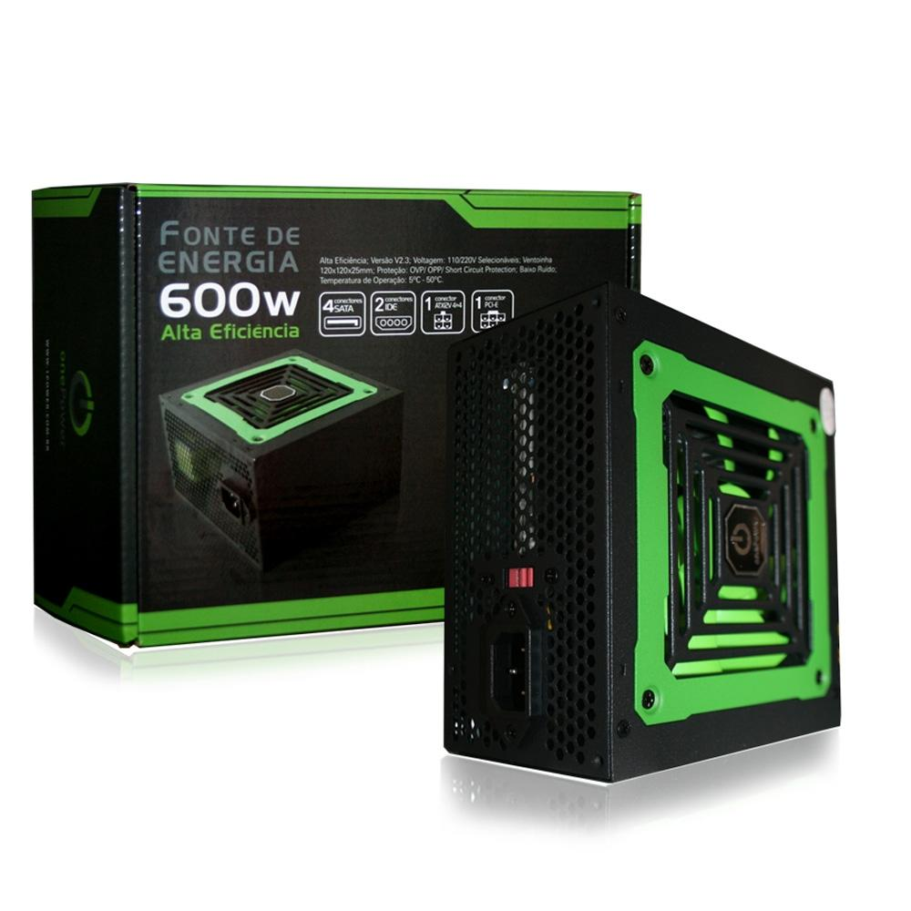
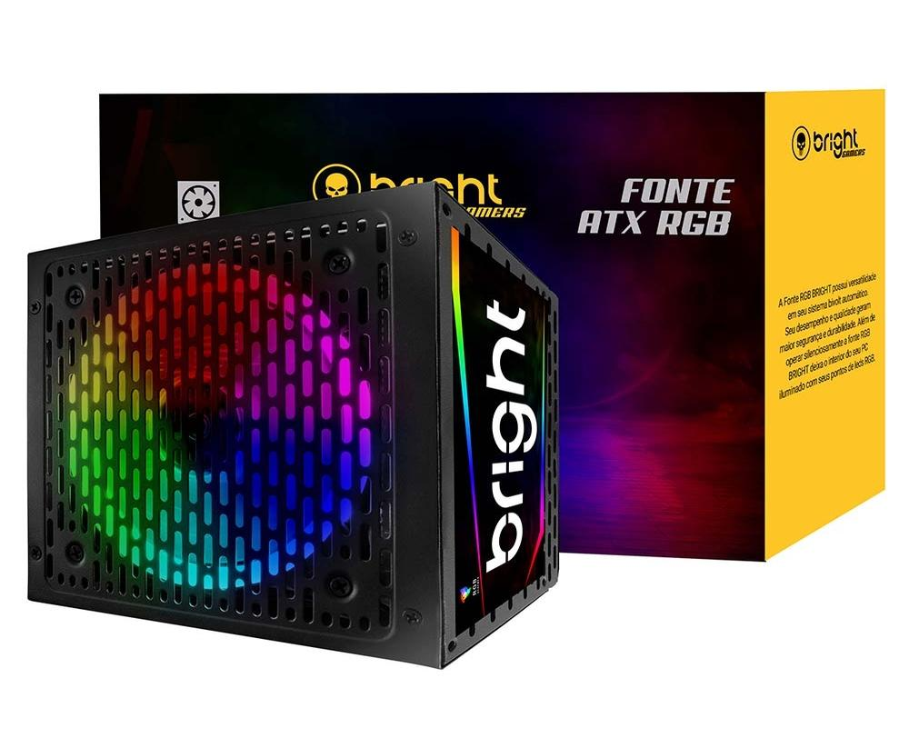

Fontes
A fonte de alimentação é um componente de aparelhos eletrônicos que serve para transformar a energia elétrica que chega pelas tomadas em uma corrente elétrica contínua. Ou seja, ela recebe a energia em 110V ou 220V e transforma na voltagem adequada para o funcionamento do aparelho, que geralmente é 12V.
Qual é a melhor atualmente?
Hoje em dia praticamente todas as fontes tem pelo menos a classificação 80 Plus, que é o mínimo recomendado. Ao escolher a sua fonte, pense em quanto cada componente vai gastar em Watts: processador, placa-mãe, memória, disco rígido e placa de vídeo. Se todos eles, juntos, forem gastar 300 Watts, compre uma fonte de 400W, com uma margem de segurança. Fique atento também às certificações do produto, como os selos 80 PLUS Bronze ou White, por exemplo, que certificam que produtos tenham mais de 80% de eficiência energética.
Fonte One Power, 600W, Bivolt - MP600W3-I
R$ 179,99
Fonte Bright, 650W, 80 Plus Bronze, RGB, Bivolt, Preto - FT003
R$ 299,99
Fonte XPG Core Reactor, 850W, 80 Plus Gold Modular

R$ 699,99